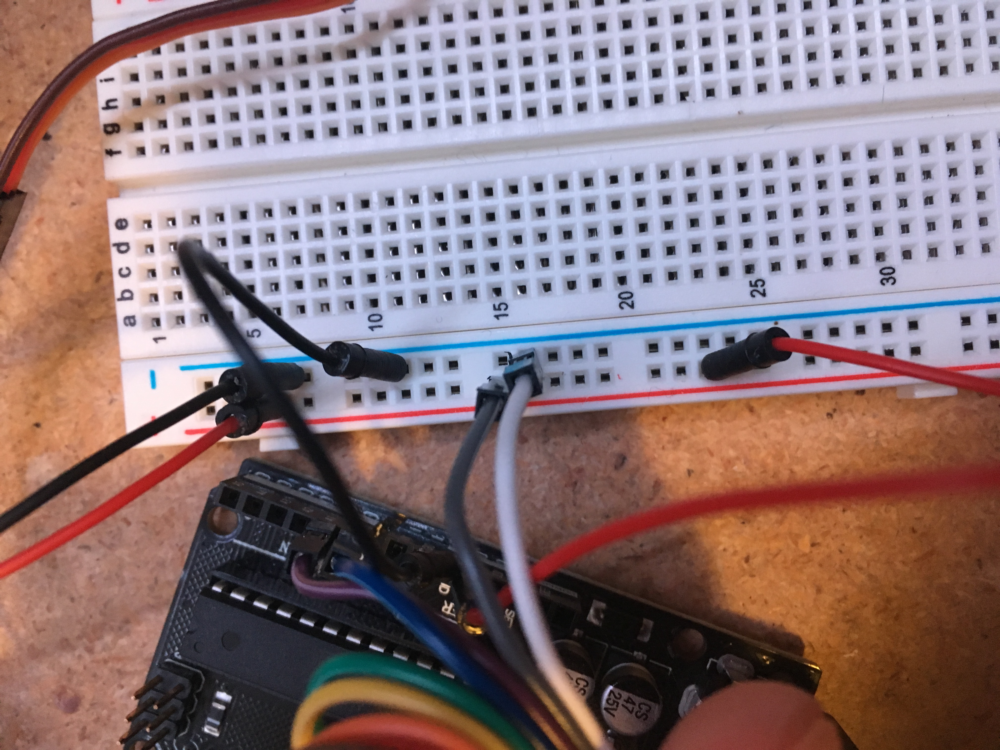
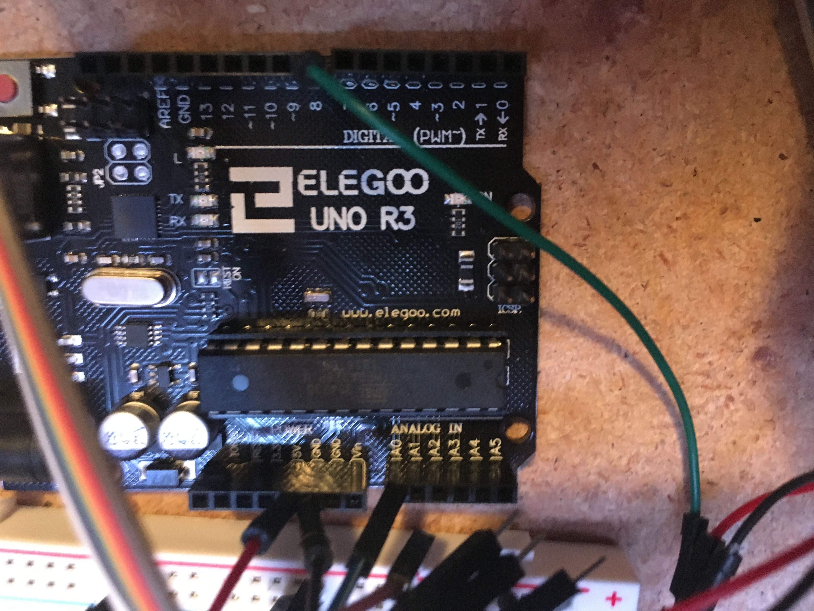
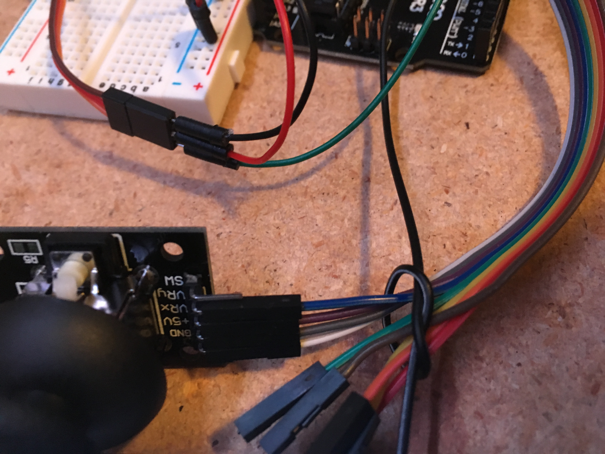
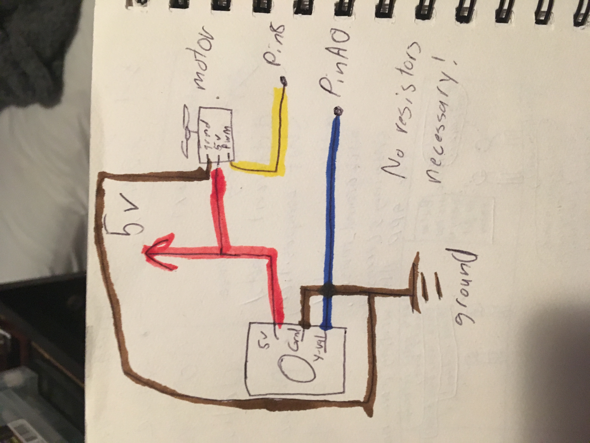

Tre's Assignment 5! Motors

This week, I used my arduino to control a servomotor using a joystick!
Circuitry and Schematics
  Here is what my breadboard, arduino, and Joystick wiring looked like by the end of the project. It is hard to tell with so many wires, but the 5v power is connected to both the joystick and the motor, the joysticks horizontal direction pin is connected to the arduino's A0 pin, and the servomotors control pin is connected to the arduino's 8 pin
This schematic uses colors to show what is connected between the motor, joystick, power, pins, and ground. No extra resistors were required to control the overall current from being too high in this circuit.
Code and Final Operation
Using the serial monitor, I found that the y position value sat around 550 when unmoved, above 600 when moved up, and below 400 when moved down. I also noticed that the servomotor only has a degree of motion between 0 and 180, it cannot make full rotations over and over. To account for these values, I have various checks in my program to make sure y-values are being met and that servo position values are not being increased after 180 or decreased after 10, so that the motor does not try to rotate passed what it is capable of.
Here my final code:
// This program uses a joystick to control a servo motor
// This program was informed by information from this article: https://maker.pro/arduino/tutorial/how-to-control-servo-motors-with-an-arduino-and-joystick
// Initial variables are set
#include
Servo servo; // Servo object is made
const int y_pin = A0; // y-pos value will be made at the A0 pin
int y_pos; // Will hold the current y position value
const int servo_pin = 8; // the servo motor will be controlled by pin 8
int current_position = 90; // The current position of the servomotor
// Sets up everything
void setup()
{
servo.attach(servo_pin); // connects the servemotor to pin 8
servo.write(current_position); // gives the servomotor an initial position
pinMode(y_pin, INPUT); // defines A0 as an input pin
Serial.begin(9600); // starts a serial monitor for value checking
}
void loop()
{
y_pos = analogRead(y_pin); // reads the y position of the joystick
if (y_pos < 400) // if the joystick is pushed down
{
if (current_position > 10) // if the current position is not at the end of the servomotor's movable range
{
current_position = current_position - 20; // move the current position down
servo.write(current_position); // write this value to the servomotor
delay(75); // add delay
}
}
if (y_pos > 600) // if the joystick is pushed up
{
if (current_position < 180) // if the current position is not at the top of the servomotor's movable range
{
current_position = current_position + 20; // move the current position up
servo.write(current_position); // write this value to the servomotor
delay(75); // add delay
}
}
// Write the current values to the serial monitor for double checking
Serial.print("y position: ");
Serial.println(y_pos);
Serial.print("current position: ");
Serial.println(current_position);
}
Here is the final result, the motor moves based on if the joystick is moved up or down. I put a little android on the motor to make the movements more obvious.